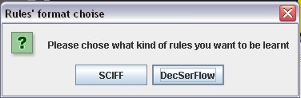
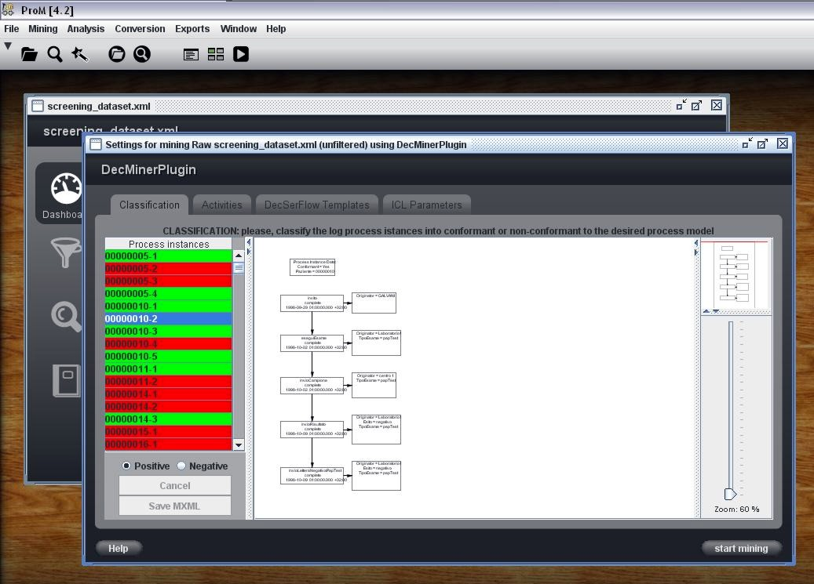
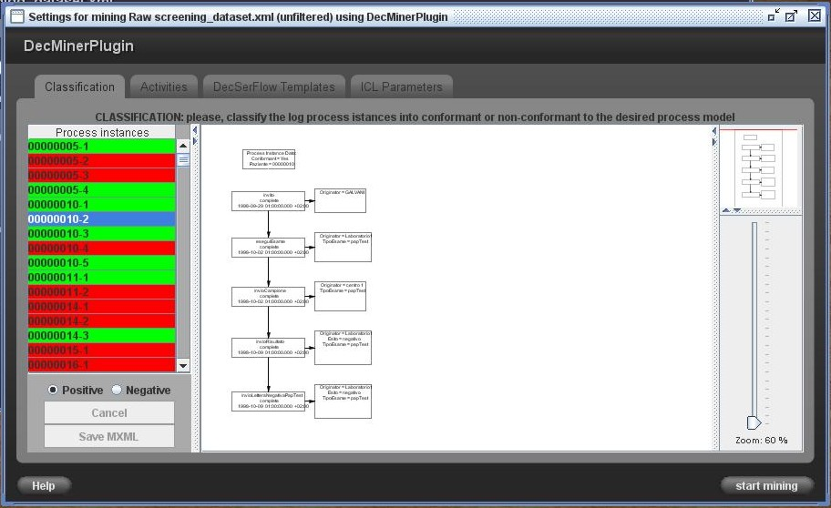
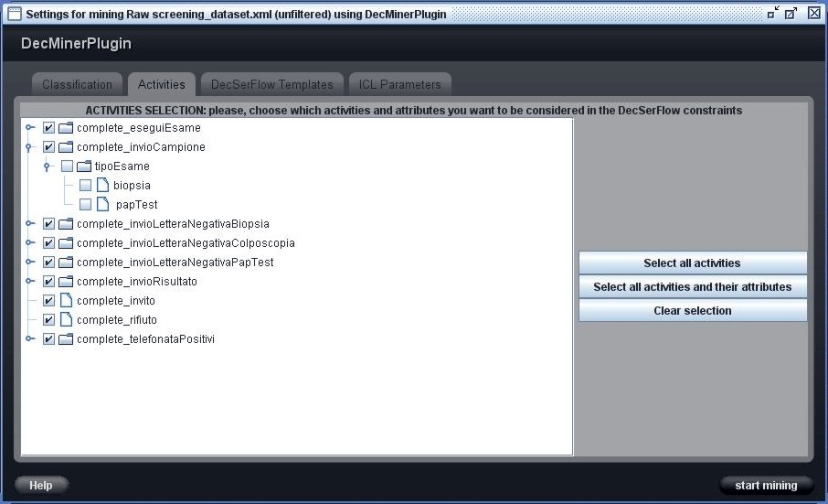
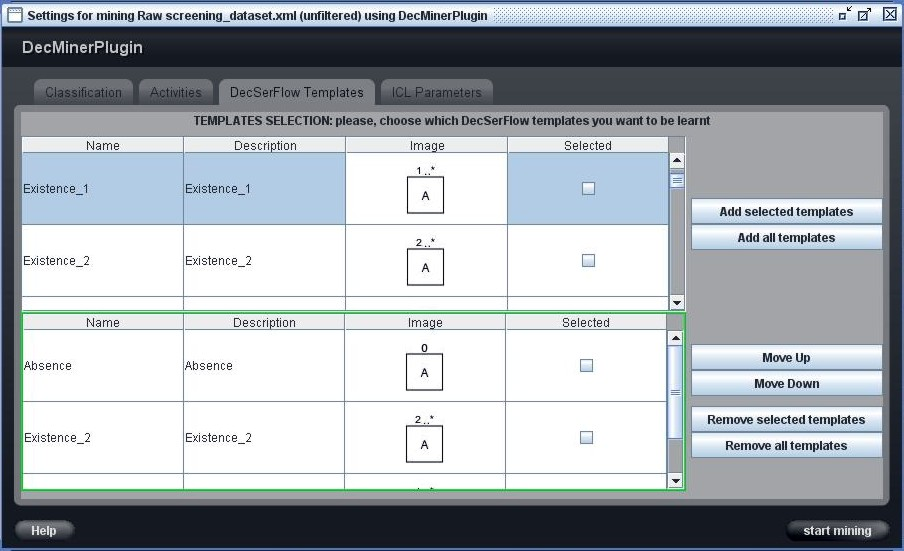
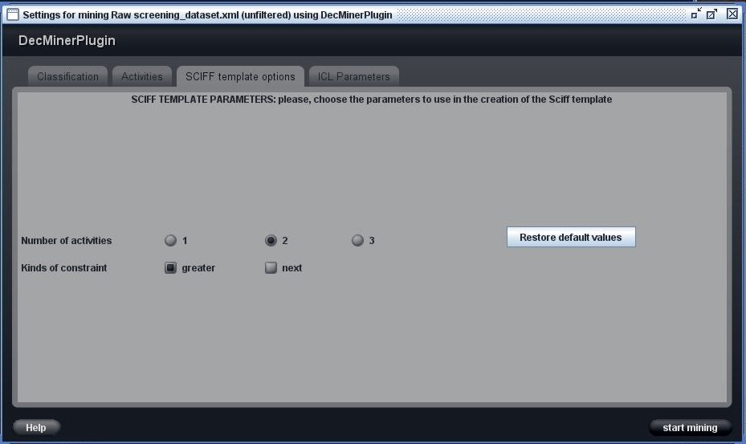
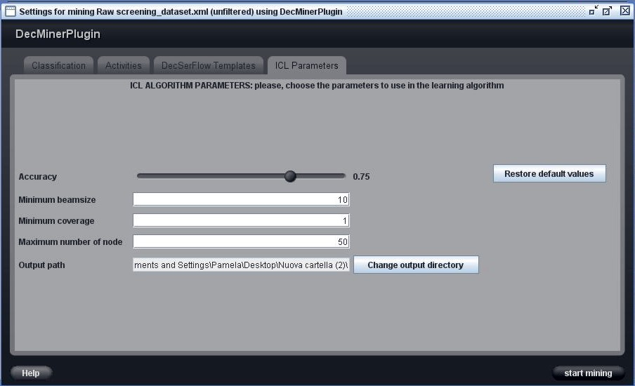
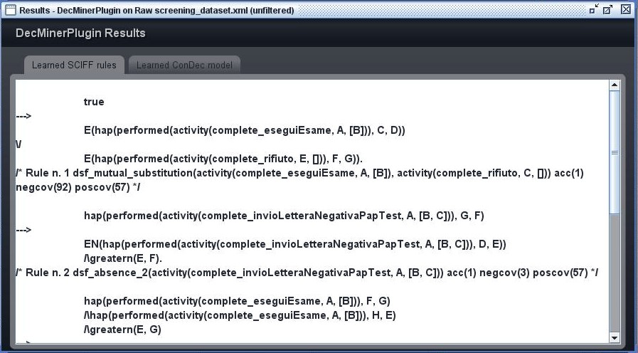
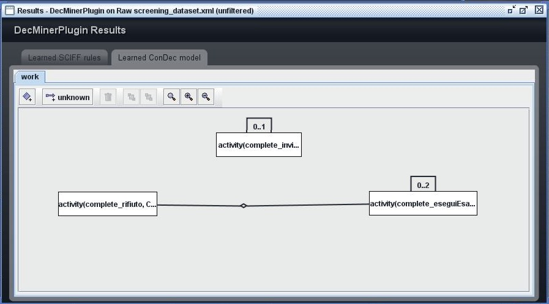

The DecMiner plugin allows to learn DecSerFlow and SCIFF constraints that can describe a process, which istances descriptions are saved in a log file.
In order to learn those rules the process istances should necessary be classified (the instances saved in the log file might been already classified or
can be classified in the DecMiner plugin window) into conformat or non-conformant to the desired process model.
The basic concepts of DecSerFlow are:
A DecSerFlow constraint, or rule, involves one or more activities.
A constraint that involves only one activity, or unary formulae, has the following model:
dsf_nameOfTheConstraint(activity(activityName, someActivityAttributes))
A constraint that involves two activities, or binary formulae, has the following model:
dsf_nameOfTheConstraint(activity(activity1Name, someActivity1Attributes),activity(activity2Name, someActivity2Attributes))
And so on.
The basic concepts of SCIFF are:
After opening a log file, you can launch the DecMiner plugin from the Mining menu of ProM.
First of all a window that ask you to choose if you want to learn SCIFF or DecSerFlow rules is shown (like in the picture below).

Shortly after that, if it is the first time you launch the plugin, a window is prompted to choose the output directory of the mining process.
The specified directory will be memorized so that you won't be ask to choose it anymore.
However you can change the output directory at any time in the "ICL Parameters" tab of the plugin main window.
The output of the process will be named datasetForICL.icl.out and it will contain the learnt rules in a SCIFF format and, in case, in the DecSerFlow format,
and also some information about the learning process (execution time, number of negative examples not covered by the learnt rules, the algorithm parameters...).
If you have chosen to learn DecSerFlow rules, another output file, named datasetForICL.xml, will be created and it
will contains the DecSerFlow rules in the xml graphical representation used by Declare [4].
In the case you are using the version of DecMiner plugin that needs an installation of SWI Prolog, the plugin tries to find
the prolog installation when launched for the first time. If it is not able to find it, it will ask you for the root directory of the SWI installation on your machine.
After that the main window of DecMiner plugin appers:

The learning procedure, which result is a group of DecSerFlow or SCIFF rules, is divided into the following, non-sequential, steps:

On the left of the window there is a column that lists all the process istances. The selected istance is shown in a graphical representation on the right
part of the window.
A process istance may be hightlighted in three diffent colors that represent its current state:
The Cancel button allows to restore the istances to the last saved state.
The Save MXML button allows to save the current state of the classification process and export the classified log file in the MXML format.

This window shows all the activities (and their attributes) that have been found in the log file using a tree representation:
activities are the roots of the tree, each attribute is a branch that has as many leaf as its possible values.
You should select only the activities and attributes that are relevant for the kind of constraints you want to be learnt.
In other words, only the activities that has some meaning for the process description should be selected.
The Select all activities button allows to automatically select all the activities.
The Select all activities and their attributes button allows to automatically select all the activities and all their attributes.
The Clear selection button allows to deselect all the activities and their attributes.

The template selection window allows to choose which DecSerFlow templates you want to be considered in the learning process. Only constraints that rappresent the selected templates
will possibly be part of the result of the learning process.
You should consider that the more templates you select the longer the learning process will take.
This window contains two table: the upper table contains all the DecSerFlow templates that may be chosen, while the lower table (with a green border)
contains all the selected templates. For each template is shown its name, a short description and its graphical representation (the same that is used in Declare).
There are 4 buttons that allow to add/remove templates from the selection. There are also 2 buttons that allow to move up or down a template in the table of the selected templates,
so that the template will be considered before or after another template in the learning process (the templates will be considered in the order they have in the table of selected templates).

In this window you can choose the number of activities you want to be considered in the body of the SCIFF rules and the kinds of temporal constraint to be considered.

This window allows to change the parameters of the ICL algorithm, that is used to learn the constraints that describe the relations between the actions (and attributes)
in the desired process' model (the model that the conformant istances of the process respect, and the non-conformant istances do not respect).
The learning procedure used in the DecMiner plugin differ from traditional process mining research in three aspects: first it performs
mining from both conformant and non-conformant istances, while traditionally only conformant istances are considered; second it learns a declarative
representation of a process model, while usually more procedural representation have been induced, and third, it is able to consider structured atomic activities,
thanks to the first order representation.
The language that is used to represent the knowledge base and history for ICL is a subset of the SCIFF language, originally defined in [5],
for specifying and verifying interaction in open agent societies.
The ICL algorithm perform a search in the space of all the possible constraints (derived from the combination of all the selected activities
and constraint templates as a cartesian product) to find clauses that covers all positive examples (conformant istances) and rules out some negative example.
In particulare this plugin's adaptation of ICL performs a loop in which negative istances are progressively ruled out and removed from the set of negative istances.
At each iteration of the loop a new constraint is added to the theory. Each constraint rules out some negative istances.
The loop ends when the set of negative istances is empty or when no constraint is found. In every iteration it looks for a rule by using beam search
with as the heuristic function the probability that an input istance is negative given that is ruled out by the rule. This heuristic is computed as the number
of ruled out negative istances over the total number of ruled out istances (positive and negative). Thus it looks for formulas that cover as many positive
examples as possible and rule out as many negative examples as possible. At the end of each cycle the rule with the highest value for the heuristic function is returned.
You can change the following parameters of the ICL algorithm:

The left tab of the window (and the only one tab in the case you have chosen to learn SCIFF rules) shows the learnt rules, in a textual representation.

The right tab of the window (that is shown only if you have chosen to learn DecSerFlow rules) shows a Declare graphical rappresentation of the DecSerFlow rules found.
[1] "Towards a DecSerFlow Declarative Semantics based on Computational Logic", Federico Chesani, Paola Mello, Marco Montali, Sergio Storari, DEIS Technical Report no. DEIS- LIA-07-001
[2] "DecSerFlow: Towards a Truly Declarative Service Flow Language", W.M.P. van der Aalst and M. Pesic
[3] SWI Prolog, SWI Prolog web site and license
[4] Declare, Declare web site and license
[5] "Verifiable agent interaction in abductive logic programming: the SCIFF framework",Alberti M., Chesani F., Gavanelli M., Lamma E., Mello P., Torroni P.
[6] "Applying Inductive Logic Programming to Process Mining", Evelina Lamma, Paola Mello, Fabrizio Riguzzi, Sergio Storari